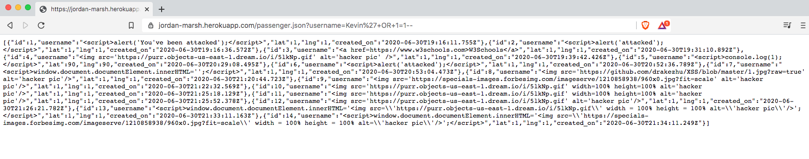
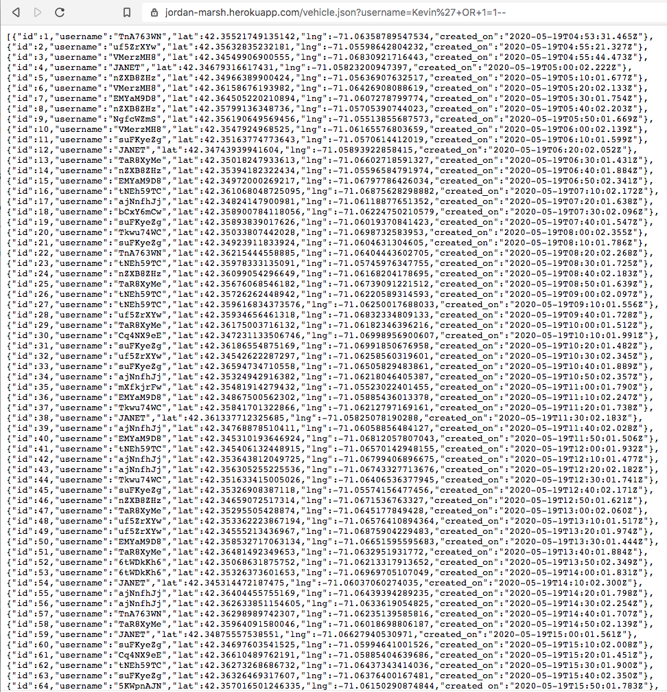
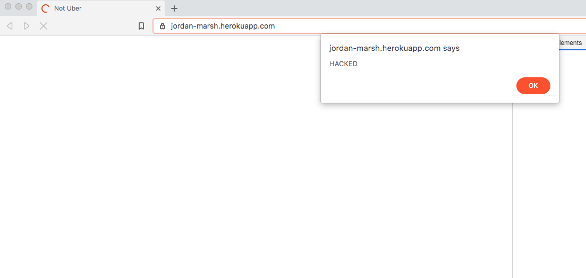

Hi, my name is Kevin, I'm a security consultant who was hired
to resolve security and privacy issues for notUber, a ride-hailing
service.
This ride-hailing service has many different
functions, they are:
Tools: Curl
The tool I used was Curl and the methods of attack were SQL
injection and Cross-Site scripting XSS via the browser/command line.
SQL injection vulerability detected - Two issues found using
SQL injection:
By inserting '+OR+1=1-- into the GET request
for passengers; like so:
What results in the SQL query will return all passenger's
database records where the username is Kevin or 1 is equal to 1.
Since 1 = 1 will always be true, this SQL query will return
all passenger database records regardless of the username given.
Similarly this can be done with the GET request for vehicles;
like so:
This will display all vehicle's database records regardless of what the username given is.
Cross-site scripting (XSS) vulnerability detected -
The 2 POST APIs allow the users to insert their usernames
into the databases of passengers or vehicles without any measures
to protect against XSS.
I tested this by injecting javascript
code via this Curl
command:
HIGH LEVEL OF URGENCY NEEDED.
Four major vulnerabilities
were found in the system using 2 different methods of testing
the system.
These 2 security risks are known as SQL injection
and Cross-Site Scripting XSS, both in the top 10 web application
security risks. You can learn more here:
OSWASP TOP TEN
The security of our database is in question,
we risk exposing passenger and notUber driver's vehicle records.
(SQL injection)
We also risk the functionality of our site and
exposing visitors to our site to potential harm and danger.
If an attacker wanted to they could manipulate our website in a way
where sensitive data can get sent to them about visitors to our
site without them even knowing. (XSS)
Issue #1
Issue:
SQL Injection vulnerability -
adding ‘+OR+1=1-- to the
URL request after the username field
https://jordan-marsh.herokuapp.com/passenger.json?
username=Kevin'27+OR+1=1--
(see description below for more details)
Location/page where issue was found:
/passenger.json code, starting at line 76
Severity of issue (low, med, high):
HIGH!
App intended to only be able to look at records of
a given username, out of privacy reasons being able to access
records you shouldn’t have access to, is a high severity.
SQL injections overall is a high risk method of attack,
#1 on OWASP Top 10.
Description of issue:
The app should only be able to retrieve a list of all passenger records when given a specific username. If that username isn’t found, an empty list should return. Thus users of this app should have only been able to retrieve a passenger’s records if they know the username. By doing a SQL injection attack, were able to retrieve records of all passengers without knowing a specific username.
Proof of vulnerability:

Resolution:
Don't use dynamic SQL where you construct queries using user input instead use prepared statements, parameterized queries or stored procedures. See code below:
Issue #2
Issue:
SQL Injection vulnerability -
adding ‘+OR+1=1-- to the
URL request after the username field
https://jordan-marsh.herokuapp.com/vehicle.json?
username=Kevin'27+OR+1=1--
(see description below for more details)
Location/page where issue was found:
/vehicle.json code, starting at line 91
Severity of issue (low, med, high):
HIGH!
App intended to only be able to look at records of
a given username; out of privacy reasons being able to access
records you shouldn’t have access to is a high severity.
SQL injections overall is a high risk method of attack,
#1 on OWASP Top 10.
Description of issue:
The app should only be able to retrieve a list of all vehicle records when given a specific username. If that username isn’t found, an empty list should return. Thus users of this app should have only been able to retrieve a vehicle’s records if they know the username. By doing a SQL injection attack, were able to retrieve records of all vehicles without knowing a specific username.
Proof of vulnerability:

Resolution:
Similarly to issue #1's resolution, don't use dynamic SQL where you construct queries using user input instead use prepared statements, parameterized queries or stored procedures. See code below:
Issue #3
Issue:
Cross-Site Scripting XSS vulnerability -
adding JavaScript code to the
username field instead of an username:
Location/page where issue was found:
/rides code, starting at line 16
Severity of issue (low, med, high):
HIGH!
Username inputs aren’t being validated. Thus the
user is able to include JavaScript into the username input.
When the input is later sent as a response in the (‘/‘)
index page it will run whatever javascript was inserted into the
username table. This has the potential to cause very deadly
effects to the database.
Description of issue:
Cross-Site Scripting vulnerability was detected - hackers have the ability to add javascript to the username field in the HTTP POST request- this code is later sent as a http response on the index page we were able to manipulate the database username field with javascript. See picture below
Proof of vulnerability:

Resolution:
One resolution is to use a validator to validate the user's input for the username. One important lesson a wise teacher once taught me: NEVER TRUST USER INPUT!!! Set it so that the username only accepts alphanumeric characters, no symbols. We can add additional conditional checks before we process the client.query in app.post. Since this server already has the validator addon we can use that. On line 23 add the following to the if statement:
I would recommend a HIGH level of urgency in fixing these issues.
If possible cease all website functionality until these
vulnerabilities have been patched.
I would recommend a thorough
penetration test for any newly created web apps.
Potentially
hiring a web security developer/officer to oversee future web
security operations.
There is also software services that can
help detect vulnerabilities in web apps.
Application services
such as Burp Suite can allow users/companies to secure their apps
from any vulnerabilities.
Burp suite has a lot of powerful tools
used for penetration testing.
Burp suite offers enterprise
automated protection for $3,999 per year.
If you do hire a web
security officer Burp suite offers their professional
tool suite for professional penetration testers for $399/per
user per year.